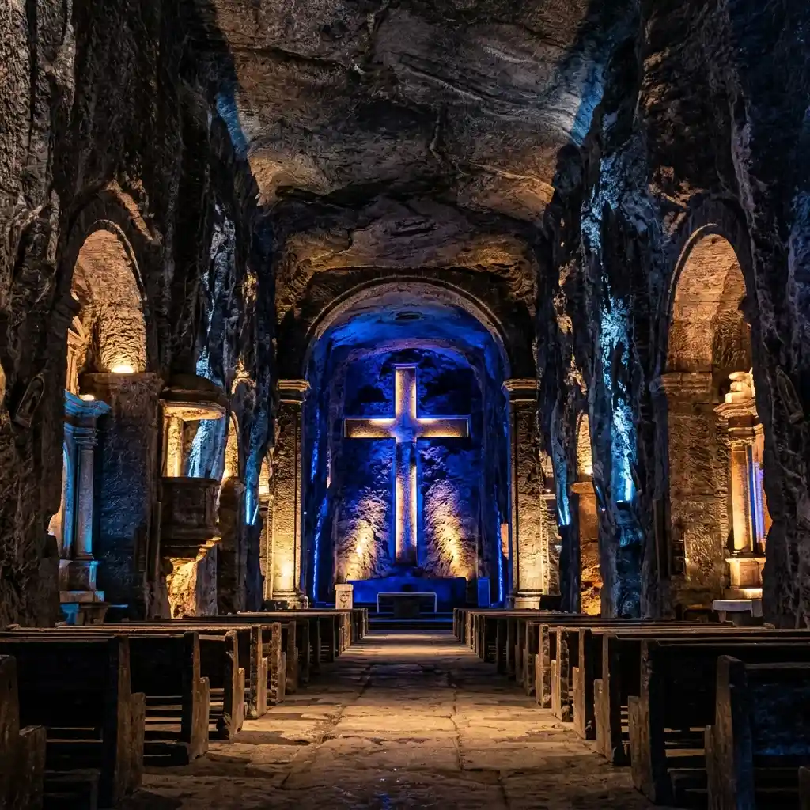
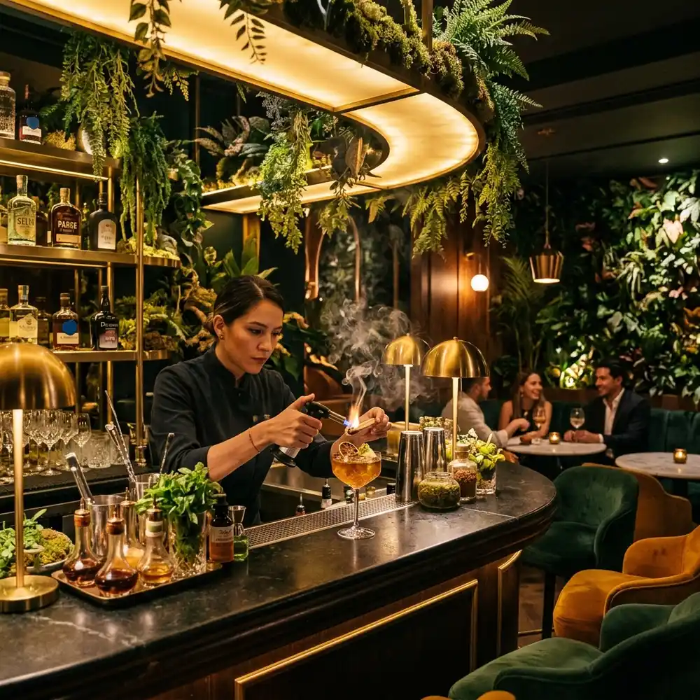

Explore la Catedral de Sal de Zipaquirá en privado, deléitese con la alta cocina de origen del altiplano y conéctese con un rito sensorial de destilados botánicos en una travesía premium de un día completo.
El verdadero viaje no se mide en kilómetros, sino en la calma con la que se vive. Organizar una travesía al altiplano por cuenta propia suele traducirse en largas filas bajo el sol, la rigidez de transportes compartidos, el estrés del tráfico andino y la incertidumbre de no saber si realmente está accediendo al corazón de la cultura local. En Threads Travel, creemos que descubrir la grandeza de Colombia en nuestro exclusivo Paquete La Ruta de la Sal en Zipaquirá no debería exigirle sacrificar su tranquilidad.
Cada momento de la travesía está diseñado bajo el estándar de confort y exclusividad de Threads.
Su viaje comienza en la puerta de su hotel.
Olvídese de la logística y el tráfico a bordo de nuestro transporte privado premium, disfrutando de amenidades exclusivas, bebidas y una asistencia en ruta que anticipa cada una de sus necesidades.
Acceda de manera preferente a la majestuosa Catedral de Sal.
Un guía bilingüe experto le guiará en un recorrido privado e íntimo a 180 metros bajo tierra, libre del bullicio de los grupos turísticos, culminando con una pausa gourmet exclusiva en el Café del Domo.
Camine sin prisas por el centro histórico de Zipaquirá.
Aprecie su arquitectura colonial antes de dejarse sorprender por un almuerzo de autor contemporáneo de origen, que rinde homenaje a los sabores tradicionales con técnicas modernas y materias primas locales.

Operamos bajo un modelo exclusivo de grupos reducidos (máximo 6 invitados por salida) para garantizar la intimidad, comodidad y personalización de la experiencia.
Respuestas a sus inquietudes para que planifique su travesía con absoluta tranquilidad.
Dado que el clima del altiplano cundiboyacense suele variar y la Catedral de Sal mantiene una temperatura fresca en su interior, le sugerimos vestir en capas y llevar un abrigo ligero cómodo. Al caminar por las galerías subterráneas y las históricas calles empedradas de Zipaquirá, es indispensable utilizar calzado cerrado, plano y de suela cómoda para garantizar su seguridad y disfrute total del recorrido.
Para coordinar el transporte privado premium y el acceso exclusivo a las actividades y restaurantes, solicitamos realizar su reserva con un mínimo de 48 horas de antelación. Las cancelaciones realizadas con más de 72 horas de anticipación recibirán un reembolso del 100%. Para cancelaciones posteriores, se emitirá un crédito de viaje Threads Travel o se evaluará la reprogramación de fecha sin costo, sujeto a disponibilidad.
Por supuesto. Nuestro almuerzo de autor y la cata de destilados botánicos están diseñados para ser una inmersión sensorial placentera para todos. Al momento de confirmar su reserva con su Concierge de viajes, le consultaremos sobre alergias, intolerancias alimentarias o preferencias vegetarianas/veganas para que nuestro chef diseñe una alternativa de menú premium a la altura de sus necesidades.